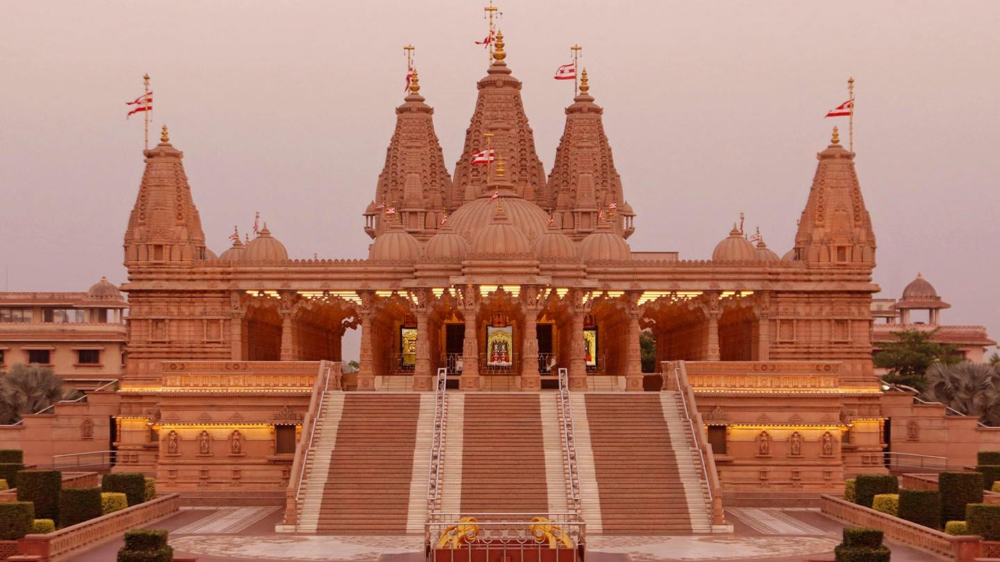

Ramtek Fort Temple
Ramtek Fort Temple, Nagpur Overview
Away from the city crowd, situated inside a fort on a hilltop, this temple is a source of rich
mythological history. It is believed that Lord Rama took rest in this temple before leaving to
conquer Lanka therefore making Lord Rama the main deity to be worshipped here.

Ambazari Lake
Located on the southwest border of Nagpur in Maharashtra in India, the Ambazari Lake is one of the
eleven lakes and largest one that the city of Nagpur houses. Boating facilities in rowboats, as well
as self-driven paddleboats, are also available to the visitors, which add to the fun and excitement
of visiting the lake and help them to explore the surrounding scenic beauty.
Amba Khori
Remember that scene from your favorite movie, where the hero and heroine dance to a romantic song by
a waterfall? Well, a visit to Amba Khori, at about 80 kilometer from Nagpur, will make this scene
come to life. Situated close to the banks of River Pench, this location is nothing short of an
exotic foreign location.

Waki Woods
Waki Woods, Nagpur Overview
Situated at a distance of about 30 kms from Nagpur, Waki Woods is a sight to behold. The luscious
greens provide you with a plethora of activities, other than a scintillating natural landscape for a
picnic day out. Life in these 'woods' is a perfect mix of modernity and nature, as you will find
fully furnished tents with facilities like electricity and phones.

Akshardham Temple
Swaminarayan Temple or Akshardham Temple is located on the Ring Road in Nagpur. The newly
constructed temple is facilitated with a huge kitchen, parking, a restaurant and a kids play area.
It is advised to visit the temple after 4 in the evening owing to its impressive lighting and decor.
The temple is spread over two floors and boasts of a striking architecture.